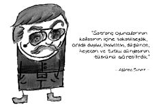

Alfred Binet (1857-1911)
Fransız psikolog. Sanatçı bir anne ve doktor bir babanın tek çocuğudur. Anne ve babası, o küçükken ayrılmış ve Alfred annesiyle kalmıştır.
Hukuk mezunu olan Binet, hekimlik eğitimini de yarıda bırakarak psikolojiye yönelmiştir.
Araştırmalarını kendi çocukları üzerinde yapmıştır.

İlk zekâ testini hazırlayan kişi olan Binet, asistanı Simon ile bir dizi soru geliştirmiş ve bunları Paris’teki okul çocuklarına uygulayarak hangilerinde zihinsel gerilik ya da öğrenme güçlüğü bulunduğunu saptamaya çalışmıştır.
İlkokul psikoloğu olarak değerlendirilir. Kökeni daha eskilere dayanan, cansız bir nesnenin veya bir beden parçasının tahrik edici olarak algılanması olan cinsel fetişizm kavramı da ilk olarak Alfred Binet tarafından tanımlanmıştır.